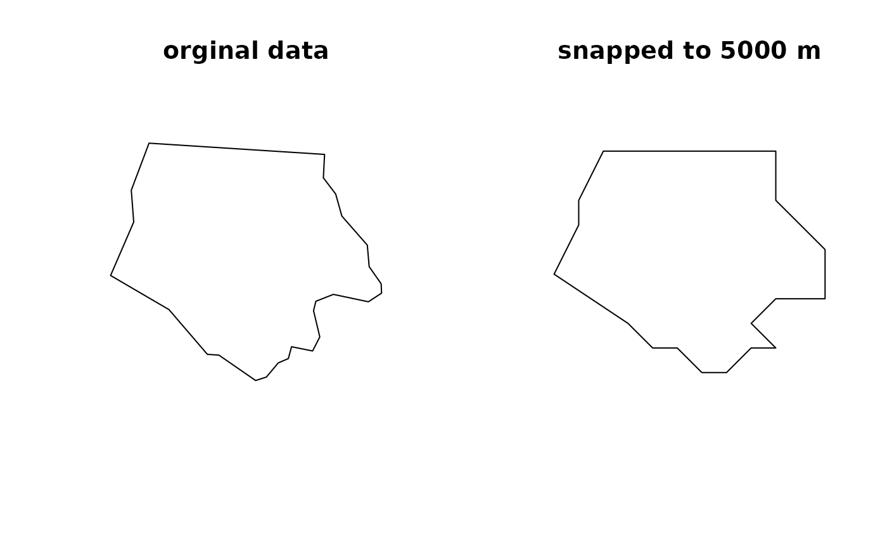

Snap geometries to a grid
st_snap_to_grid(x, size, origin)
| x | object with geometries to be snapped |
|---|---|
| size | numeric or (length) units object; grid cell size in x-, y- (and possibly z- and m-) directions |
| origin | numeric; origin of the grid |
object of the same class as x
# obtain data library(sf) x = st_read(system.file("gpkg/nc.gpkg", package="sf"), quiet = TRUE)[1, ] %>% st_geometry %>% st_transform(3395) # snap to a grid of 5000 m err = try(y <- st_snap_to_grid(x, 5000)) # plot data for visual comparison if (!inherits(err, "try-error")) { opar = par(mfrow = c(1, 2)) plot(x, main = "orginal data") plot(y, main = "snapped to 5000 m") par(opar) }